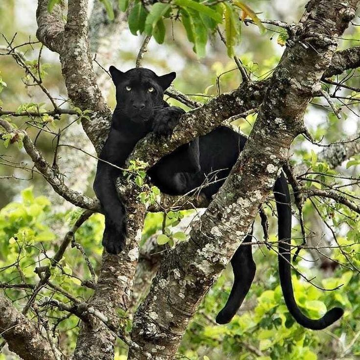
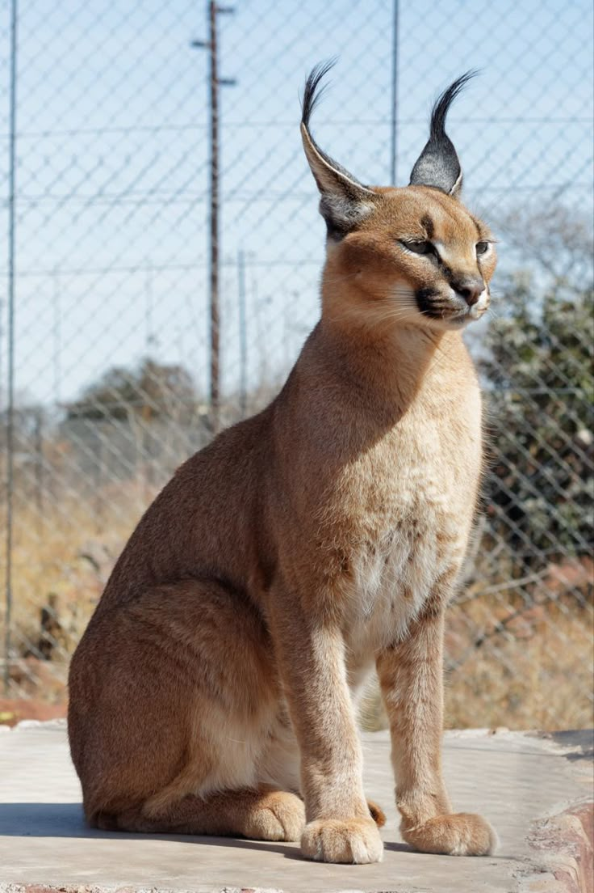
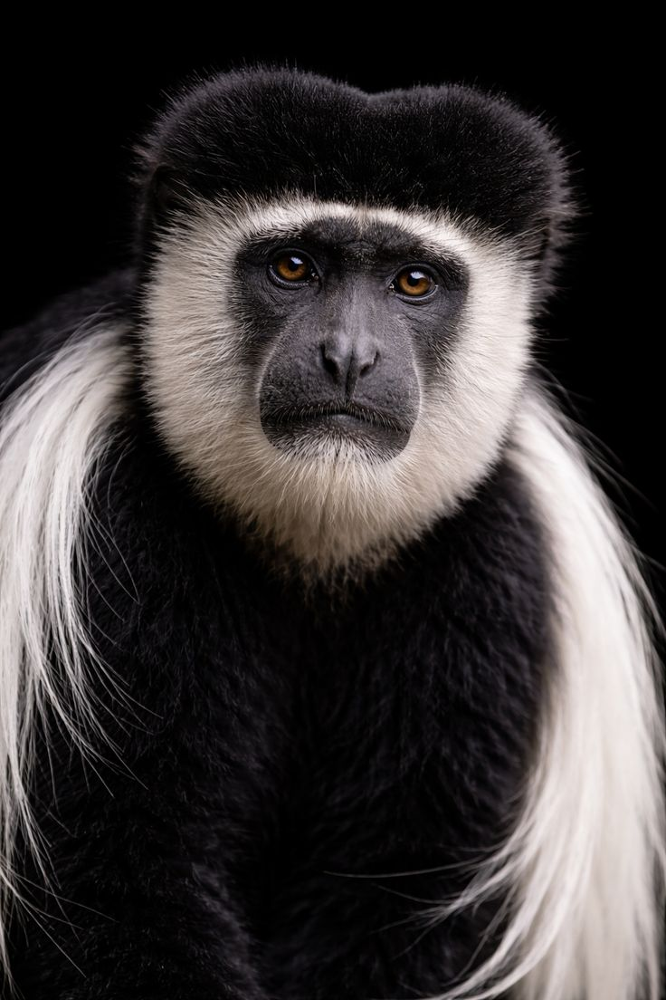

THE LARGE HERBIVORES
1. Elephant
.jpg)
The largest land mammal and a symbol of wisdom. In Kenya, elephants are known for their complex social bonds and their role as "ecosystem engineers."
NATIONAL PARKS :
- Amboseli: Best for big "Tuskers" and Kilimanjaro views.
- Tsavo East/West: Home to the famous "Red Elephants."
- Maasai Mara: Large migratory herds.
RESCUES AND CONSERVANCIES:
- Sheldrick Wildlife Trust: World-famous Nairobi nursery.
- Reteti Sanctuary: Community-run rescue in Samburu.
- Lewa Conservancy: Key elephant migratory corridor.
2. Zebra (Plains & Grevy's)

The Grevy's zebra is often described as a "donkey wearing a tight-fitting pinstripe suit"

Plains zebra is the classic, stocky horse-like version we see in movies
Kenya is the best place to see the distinction between the common Plains Zebra and the rare, endangered Grevy's Zebra.
WHERE TO FIND THEM:
- Maasai Mara: Part of the Great Migration.
- Nairobi National Park: Easily seen near the capital.
- Hell’s Gate: Safe for walking/cycling among them.
SPECIALIZED CONSERVATIONS:
- Ol Pejeta: Hosts both Plains and Grevy’s species.
- Lewa Downs: A primary stronghold for Grevy’s Zebra.
- Crescent Island: A private sanctuary on Lake Naivasha.
3. Rhino (Black & White)
.jpg)
Kenya is a global sanctuary for Rhinos. The White Rhino is a grazer (social), while the Black Rhino is a browser (solitary).
PRIMARY PARKS:
- Lake Nakuru: A major rhino sanctuary.
- Nairobi National Park: Highly successful breeding site.
- Meru National Park: Large, wild-fenced sanctuary.
PRIVATE CONSERVATIONS:
- Ol Pejeta: Last home of the Northern White Rhinos.
- Solio Ranch: Highest rhino density in Kenya.
- Lewa: Award-winning anti-poaching success.
4. Giraffe (Three Subspecies)
Kenya is the only country with three subspecies:
Maasai (jagged spots),
 Reticulated (boxed spots),
Reticulated (boxed spots),
 Rothschild's (white legs).
Rothschild's (white legs).
.jpg)
Parks by Subspecies:
- Maasai Mara: Maasai Giraffes.
- Samburu/Meru: Reticulated Giraffes.
- Ruma National Park: Rare Rothschild's Giraffes.
Interactive Sites:
- The Giraffe Centre (Nairobi): Conservation education.
- Giraffe Manor: Boutique hotel experience.
- Kigio Wildlife Conservancy: Sanctuary for Rothschild's.
5. Hippopotamus
.jpg)
Semi-aquatic giants that are territorial in water but graze peacefully
on land at night.
Despite being herbivores, hippos are widely considered the most
dangerous large land mammals in Africa due to their territorial
nature.
They don't actually "swim"; they are too heavy
They walk or bounce along the bottom of the river.
They secrete "blood sweat," a red fluid that acts as both a sunscreen
and an antibiotic.
Best Waterways:
- Mara River: Massive density during migration.
- Lake Naivasha: Famous boat-safari sightings.
- Lake Baringo: Remote and high population.
Specialized Viewing:
- Mzima Springs (Tsavo West): Underwater viewing tank.
- Nairobi National Park: Guided Hippo Pool walking trail.
- Tana River: Viewing in eastern Kenya.
6. African Buffalo (Syncerus caffer)

Known as "The Black Death," the African Buffalo is famous for its fused horns (the boss) and its unpredictable, protective nature. They are one of the most successful and dangerous herbivores in the wild.
Prime Safari Parks:
- Maasai Mara: Home to massive herds of up to 500+ individuals.
- Lake Nakuru: Excellent for seeing them in acacia woodlands.
- Amboseli: Watch them wallow in the marshy swamps.
- Tsavo East: Known for "Red Buffalo" due to the volcanic soil.
Unique Habitats:
- Aberdare National Park: Home to the smaller, reclusive Forest Buffalo.
- Meru National Park: Great for seeing large, dominant "Dagga Boys."
- Ol Pejeta Conservancy: High-density populations in a safe, monitored environment.
THE HUNTERS & SCAVENGERS OF KENYA
From the kings of the savannah to the elusive shadows of the night.
1. Lion (The King)
.jpg)
The only social cat, living in "prides." Kenya's lions are famous for their varied appearances—from the maneless lions of Tsavo to the dark-maned kings of the Mara.
WHERE TO FIND THEM:
- Maasai Mara: Highest density and best for viewing hunts.
- Nairobi National Park: Unique city-skyline sightings.
- Tsavo East/West: Famous for their history and unique maneless males.
- Ol Jogi & Ol Pejeta: Key conservation strongholds.
2. Leopard & Black Panther
.jpg)
Leopards are solitary masters of stealth.
Black Panther is
actually a melanistic leopard—it still has spots, but they are hidden
by dark pigment.

Where to find them:
- Laikipia Plateau: The world-famous home of "Giza," a wild black leopard.
- Samburu National Reserve: Leopards here are famously relaxed around vehicles.
- Aberdare National Park: Dense forests hide both golden and melanistic (black) leopards.
African Wild Dog

Known as the "Painted Wolf," these are Africa's most successful social hunters, boasting an 80% kill rate through incredible teamwork and endurance.
Top Viewing Locations:
- Laikipia Plateau: The premier spot (Ol Pejeta & Lewa Conservancies).
- Samburu & Buffalo Springs: Ideal for tracking nomadic packs.
- Tsavo Conservation Area: Sightings are rare but increasing in the vast scrubland.
Key Rescues & Research:
- Mpala Research Centre: Global leader in Wild Dog conservation.
- Reteti Elephant Sanctuary: Occasionally supports wild dog pups from the northern range.
Cheetah
 for HER.jpg)
The fastest land mammal, built for explosive daytime sprints. Unlike other cats, they are diurnal (active during the day) to avoid competition with lions and hyenas.
Best Parks for Speed:
- Maasai Mara: The open "Mara Triangle" is the best place to see a hunt.
- Amboseli: Flat, dry lake beds provide perfect visibility.
- Tsavo East: High populations in the wide, arid plains.
Rescue & Conservation:
- Nairobi Animal Orphanage: Rescues for cats from the illegal pet trade.
- Action for Cheetahs in Kenya (ACK): Research hubs in Salama and Samburu.
- Mara-Meru Cheetah Project: Dedicated monitoring of cheetah families.
4. Hyena (Spotted & Striped)
.jpg)
While often called scavengers, Spotted Hyenas are actually incredible hunters.
Striped Hyena
it is rarer, smaller, and strictly nocturnal.

Where to find them:
- Maasai Mara: Large, vocal clans are found everywhere here.
- Amboseli: Great sightings as they compete with lions.
- Samburu: A better chance to spot the elusive Striped Hyena at night.
5. Jackal & Bat-eared Fox
.jpg)
Jackals (Black-backed and Side-striped) are resilient opportunists.
Bat-eared Fox is a specialized insect-eater with massive ears.
.jpg)
Where to find them:
- Nairobi National Park: Black-backed jackals are very common here.
- Maasai Mara: Great for seeing the Bat-eared Fox in the early morning.
6. Mongoose & African Wildcat

Small but fierce. Mongooses are famous for fighting snakes, while the African Wildcat is the direct ancestor of our domestic cats.
.jpg)
Where to find them:
- Maasai Mara: Banded Mongooses are found in large family groups.
- Tsavo Trust: African Wildcats roam the scrublands here.
CARACAL

The caracal is Kenya's most athletic mid-sized cat. Known for its distinctive black ear tufts and incredible jumping ability, it thrives in the dry savannas and rugged landscapes of the Rift Valley.
Top Sighting Locations in Kenya
- Masai Mara: Best for early morning visibility.
- Laikipia: High density in private conservancies.
- Tsavo East/West: Ideal arid scrubland habitat.
- Samburu: Perfect for spotting them in rocky outcrops.
PRIMATES
1. Chimpanzees

While not native to Kenya, they were introduced for conservation.
They are highly intelligent, social, and share 98% of human DNA.
Where to find them: Ol Pejeta Conservancy (Sweetwaters Chimpanzee Sanctuary) is the only place in Kenya to see them.
2. Baboons

Olive Baboons and Yellow Baboons are common. They live in large troops and are known for their complex social hierarchies and opportunistic feeding.

Where to find them: Found almost everywhere; specifically Masai Mara, Nakuru, Amboseli, and Samburu.
3. Monkeys

Includes Vervet Monkeys (black faces) and Sykes' Monkeys (furry, darker coats). They are playful and often found near human campsites.

Where to find them: Coastal forests (Diani), Nairobi National Park, and Mount Kenya region.
4. Colobus

The Black-and-White Colobus is striking for its long white cape of fur and lack of thumbs. They are strictly arboreal (live in trees).
Where to find them:
Kakamega Forest, Aberdare National Park, and the Diani Colobus Conservation area.
5. Bushbabies (Galagos)

Small, nocturnal primates with massive eyes for night vision and incredible jumping abilities.
Where to find them:
Often heard "crying" at night in wooded areas like Tsavo, Gede Ruins, and various lodge gardens.
ANTELOPES AND EVEN-TOED UNGULATES
1. Large Antelopes

Includes the Eland (the largest),
Waterbuck,
.jpg) Oryx
Oryx
.jpg)
They are
majestic and move in small to medium herds.
Masai Mara (Eland), Lake Nakuru (Waterbuck), and Samburu (Beisa Oryx).
2. Small Antelopes
Includes the Impala,
 Grant’s Gazelle,
Grant’s Gazelle,
 and Thomson’s Gazelle.
and Thomson’s Gazelle.
 They are known for their speed and "pronking" (leaping in the air).
They are known for their speed and "pronking" (leaping in the air).
Where to find them:
Wide open plains of the Serengeti-Mara ecosystem and Nairobi National Park.
3. The Duikers
.jpg)
Small, shy, and solitary antelopes that dive into bushes when startled. They have a characteristic arched body.
Where to find them:
Thick brush and forests in Mount Kenya, Aberdares, and Shimba Hills.
4. Swine
Includes the Warthog (seen during the day)

and the
Giant Forest Hog
 or Bushpig (more
elusive).
or Bushpig (more
elusive).
Where to find them:
Warthogs are everywhere (Mara/Amboseli); Giant Forest Hogs are found in the Aberdare and Mount Kenya forests.
ELUSIVE MAMMALS
1. Pangolins

The world's most trafficked mammal. Covered in keratin scales, they roll into a ball when threatened. They are extremely rare to spot.
Where to find them:
Occasionally sighted in the Masai Mara, Sala's Camp area, and the arid North.
2. Insectivores
Includes Elephant Shrews
 (Sengi) and
Aardvarks.
(Sengi) and
Aardvarks.
 These animals are usually nocturnal or very
timid.
These animals are usually nocturnal or very
timid.
Where to find them:
Arabuko Sokoke Forest (Golden-rumped Elephant Shrew) and Tsavo West (Aardvarks).
3. Hyraxes
.jpg)
Small, rodent-like animals that are actually the closest living relatives to the Elephant. Rock Hyraxes and Tree Hyraxes are common.
Where to find them: Hell’s Gate National Park (Rock Hyraxes) and the forests of Mount Kenya (Tree Hyraxes).
4. Rodents
Beyond common rats, this includes the
Crested Porcupine
 and the
African Giant Squirrel.
and the
African Giant Squirrel.

Where to find them:
Porcupines are nocturnal nationwide; Giant Squirrels are found in Kakamega Forest.
5. Hares
.jpg)
Specifically the African Savanna Hare. They are solitary and nocturnal, often seen in the headlights of safari vehicles.
Where to find them:
Grassy savannas of Tsavo and the Masai Mara.
6. Bats

Kenya hosts many species, from Fruit Bats to Insect-eating bats. They play a vital role in pollination and pest control.
Where to find them: Suswa Caves, Kitum Cave (Mount Elgon), and the coastal Gede Ruins.